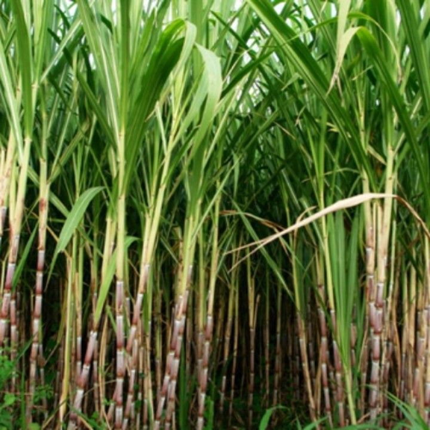

nature.co |
|
Sidebar |
Pohon TebuPohon tebu (Saccharum officinarum) adalah tanaman yang ditanam secara luas untuk menghasilkan tebu, bahan baku utama untuk produksi gula. Mereka adalah anggota keluarga rumput-rumputan (Poaceae) dan berasal dari Asia Tenggara. Pohon tebu memiliki batang yang panjang dan buluh yang berisi cairan manis, yang diekstraksi untuk menghasilkan gula. Mereka dapat tumbuh hingga beberapa meter tingginya dan umumnya dipanen setelah mencapai kematangan penuh. Untuk informasi lebih lanjut tentang pohon tebu, Anda dapat mengunjungi halaman Wikipedia tentang Pohon Tebu. |